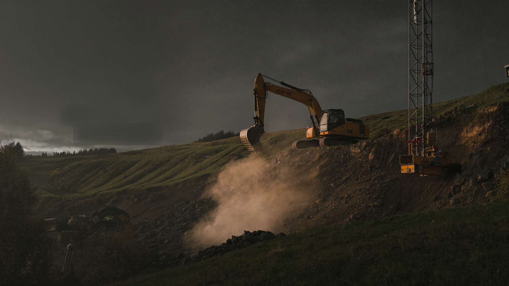
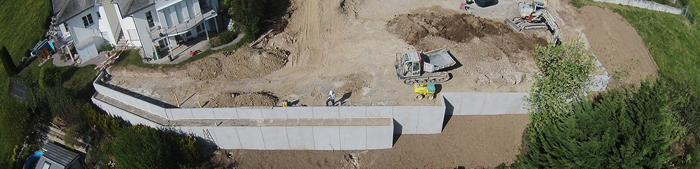
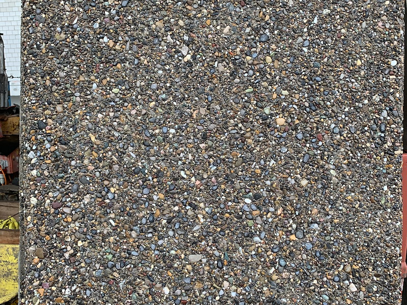
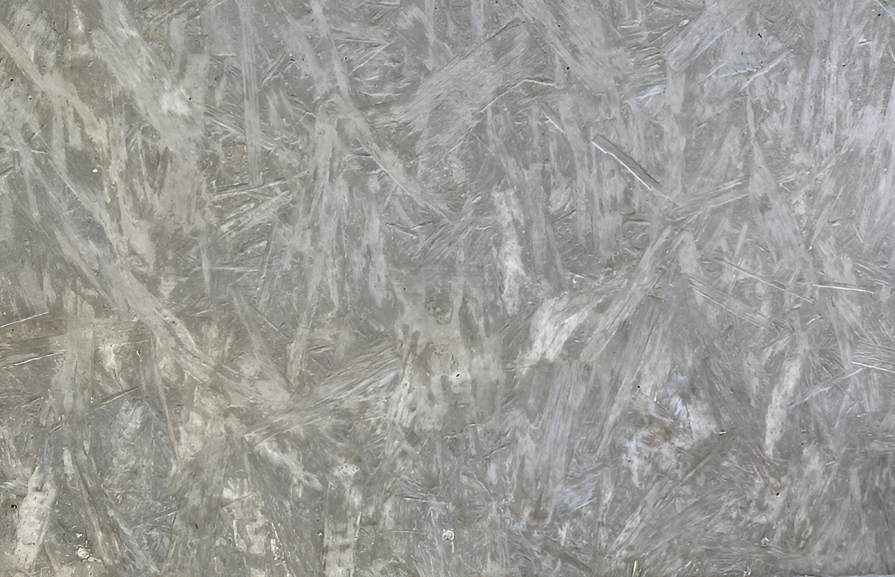
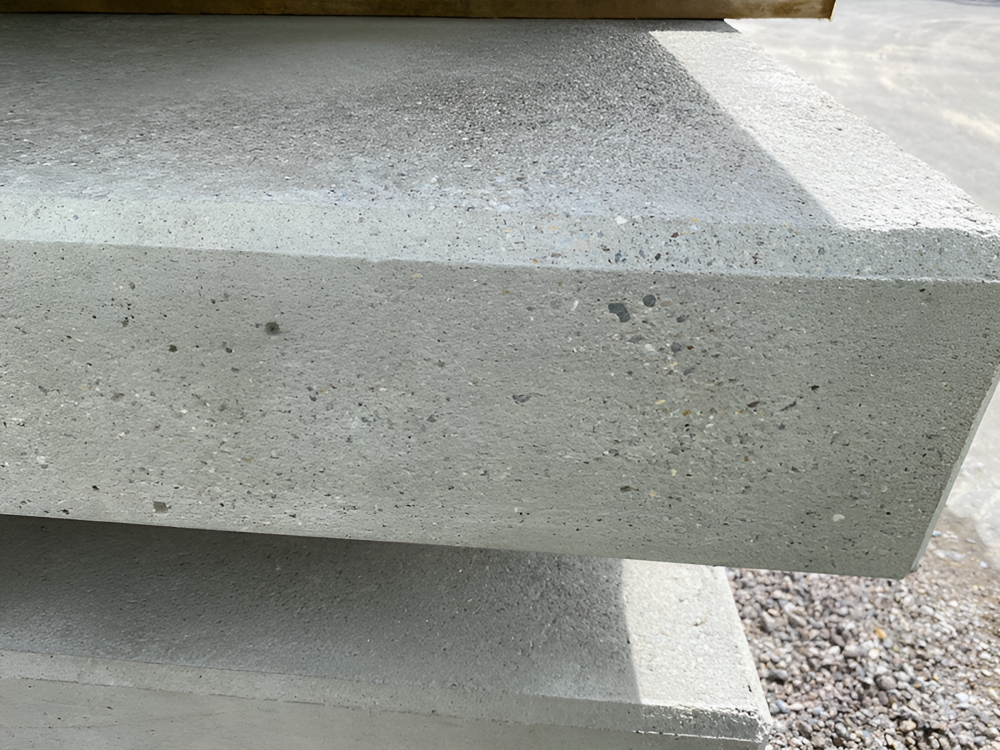
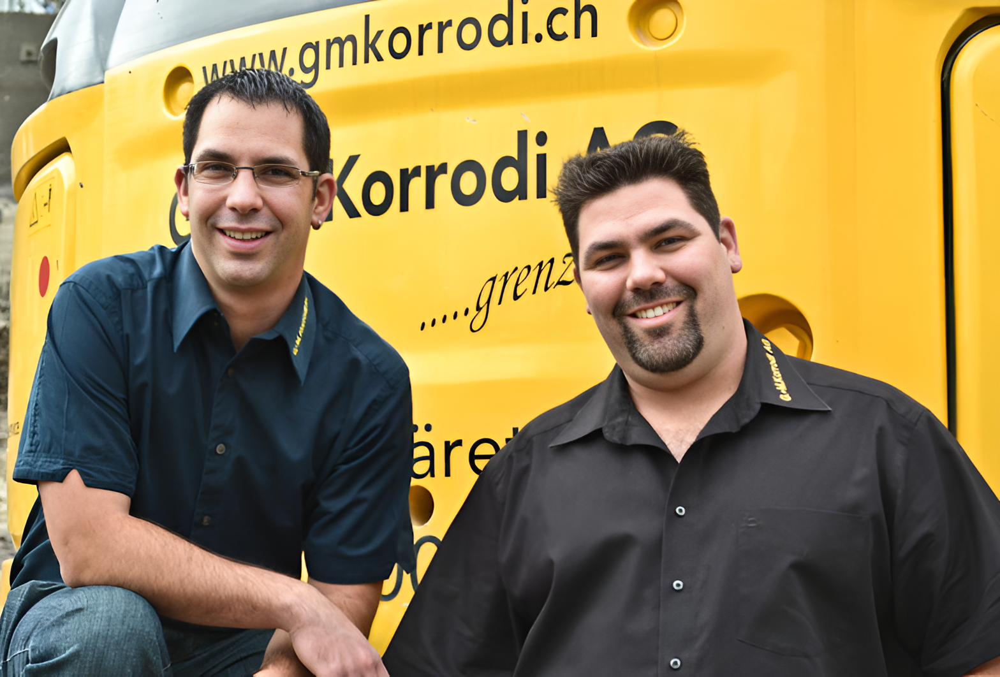
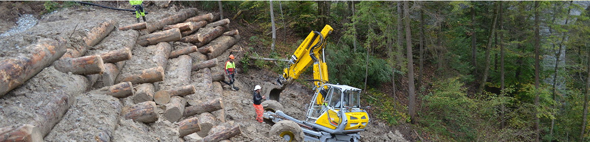
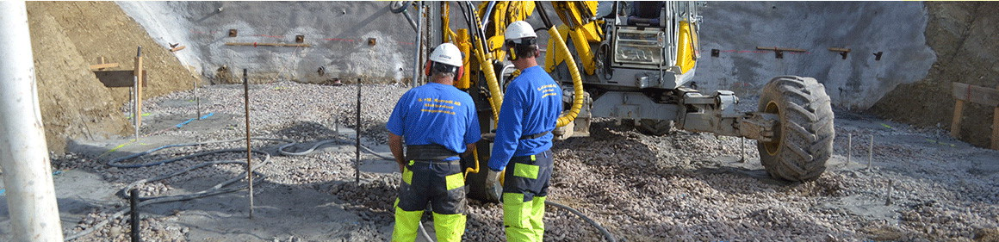
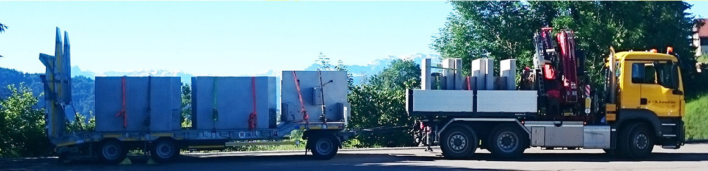
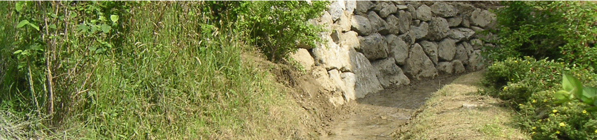

Tiefbau, der
keine Grenzen
kennt.
Von der Baugrubensicherung über Pfahlgründung und das patentierte GMK-System bis zu Aushub, Strassen- und Leitungsbau – alles aus einer Hand, ohne Subunternehmer.
Vom Zwei-Mann-Betrieb zum gestandenen KMU.
Hinter der G. + M. Korrodi AG stehen die Brüder Guido und Marco Korrodi. Gegründet 2004 mit Hauptsitz in Bäretswil, befinden sich Büro und Werkhof seit 2014 in der Industriezone Wetzikon. Aus einem Zwei-Mann-Betrieb sind wir zu einem erfolgreichen KMU mit rund 30 Mitarbeitern gewachsen – mit speziell leichten Maschinen, die selbst auf engstem Raum Tiefenfundationen bis 21 m ausführen.
Grenzenloses
Angebot.
Unser Kerngeschäft ist der Spezialtiefbau. Mit der Zeit haben wir unsere Spezialgebiete stetig erweitert – heute decken wir vierzehn Fachbereiche ab, von der Baugrube bis zum Garten.
Das GMK-System.
Unser eigens entwickeltes, patentiertes Stützmauersystem für Hangsicherungen jeder Art. Die Mauerelemente werden individuell nach Baustellenmass aus einem Guss gefertigt – bewährt an SBB-Bahntrassen, für den Kanton Zürich und zahlreiche Gemeinden.




Im Grenzenlosen liegt unsere Motivation.
Alles aus einer Hand
Sämtliche Tiefbauarbeiten ohne Subunternehmer – von der Baugrube über die Pfählung bis zum fertigen Belag.
Spezialmaschinen
Leichte, kleine Geräte und der Menzi Muck arbeiten dort, wo herkömmliche Maschinen nicht weiterkommen.
Eigene Innovation
Mit dem patentierten GMK-System haben wir den Stützmauerbau neu gedacht – schneller, günstiger, langlebiger.
Umweltbewusst
Unsere Umweltingenieurin (BSc) sorgt für ressourcenschonendes, naturnahes Bauen und Recycling von Material.

Junge, Zürcher Tiefbauunternehmer.
Als Tiefbau-, Garten- und Strassenbaufirma im Zürcher Oberland fühlen wir uns mit der Region und ihren Einwohnern verbunden. Die beiden Brüder führen ihre Firma im Team – Umweltbewusstsein und Arbeitssicherheit sind für uns selbstverständlich.
„Ein hilfsbereiter und zuverlässiger Umgang mit allen Beteiligten eines Bauprojekts ist für mich sehr wichtig.“
„Optimale Lösungen zur Realisierung der Kundenwünsche, selbst unter schwierigen Bedingungen, zeichnen uns aus.“
Einblick in unsere Arbeit.

Hangverbauung
Pfahlgründung
Transport & Kran
GewässerbauArbeiten, die in und ausserhalb von Zürich überzeugen.
Reden wir über
Ihr Bauprojekt.
Gerne stellen wir Ihnen unsere Beratung zur Verfügung und lassen Ihnen eine unverbindliche Offerte zukommen.
Riedstrasse 1
8620 Wetzikon
Baumastrasse 43
8344 Bäretswil